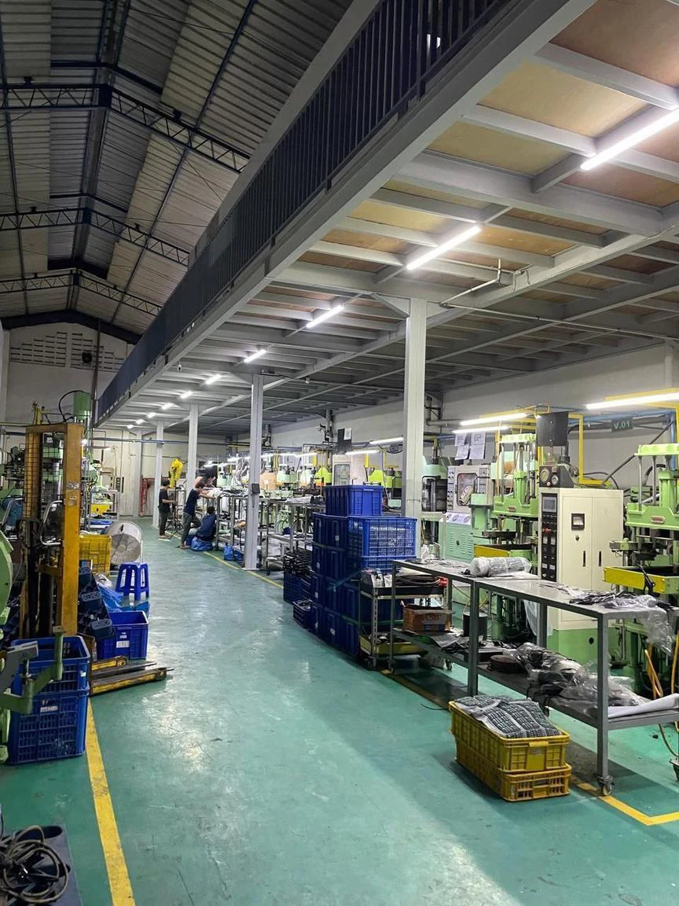
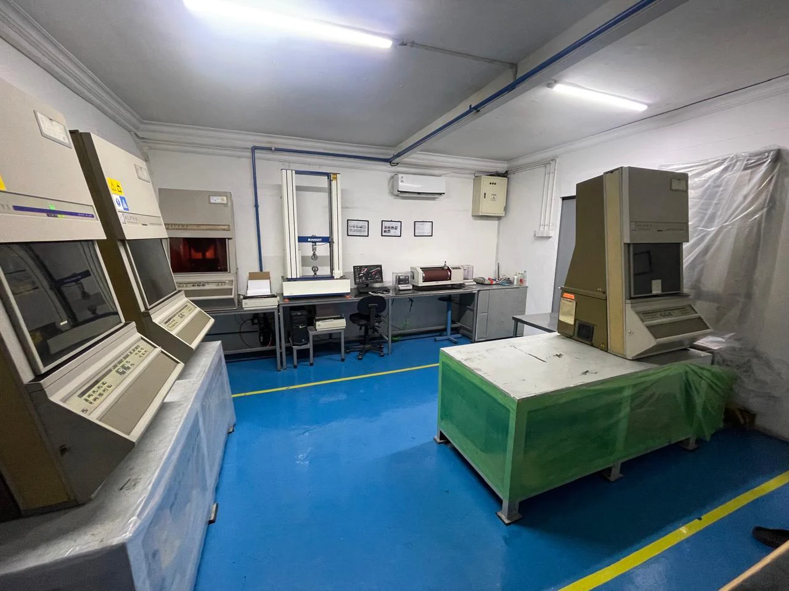
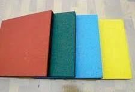

Define the need
Application, dimensions, operating conditions, target properties and expected volume.
From the first compound to the finished component. One group, bringing your rubber requirements to life.

Explore our capabilities and find a starting point for your next product. Every project begins with your requirements.
Brands served by PT Semesta Olah Lestari
Since 1994, Santo Rubber has grown from compound processing into a broad manufacturing group serving local and international requirements.
Bring a drawing, a sample, or a performance target. Our capabilities connect material development, production and in-house testing.
Application, dimensions, operating conditions, target properties and expected volume.
Compound selection, formulation adjustment, trial batches and cure optimization.
Compression, injection and extrusion processes matched to your design.
Laboratory evaluation and production scale-up against agreed requirements.

In-house support includes tensile, elongation, tear, hardness, abrasion, aging, ozone, rheometer and Mooney viscosity testing.
Natural and synthetic elastomers, developed around your application and processing needs.
Talk to us about materialsMaterial selection and final specifications are confirmed for each project.
Specialized production across Jakarta and Tangerang, Indonesia.

RUBBER. WITH ANOTHER PURPOSE.Rubber powder and granules give recovered material a role in secondary compounds, paving, tiles and sport or playground surfaces.
Our recycling capability supports wider reuse of rubber waste and the development of resource-efficient applications.
Company profiles and product capabilities, ready for your team to review.
Company profile, facilities, products and quality documentation
Open group profile02 / POWERPOINTRubber compounds, OEM development and manufacturing overview
Download brochure03 / PDFFootwear products, selected work, clients and quality control
Open footwear profileTell us what you need. We’ll help you start the right conversation.